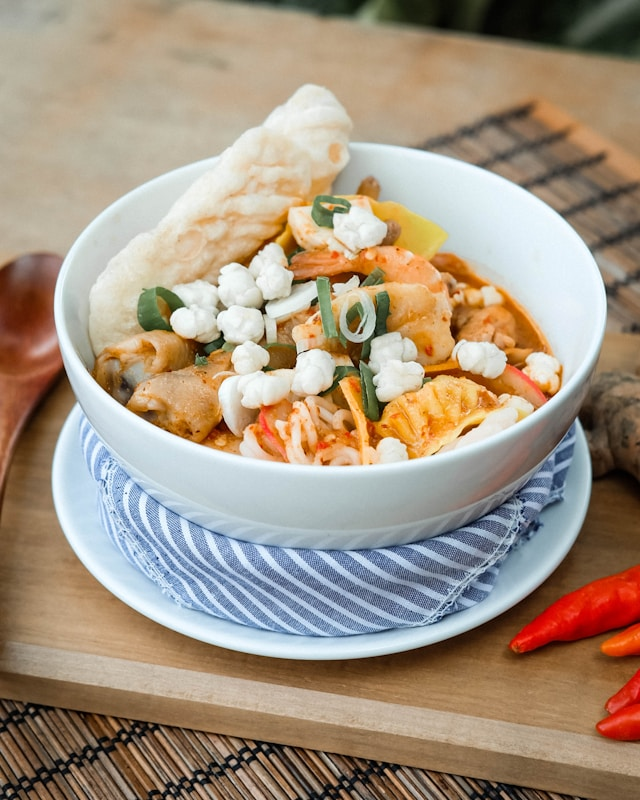

seblak
Home

Indonesia's best food ever created
Ingredients
Aromatic and spices(the core of seblak)
- Aromatic ginger: 2 centimeters, peeled
- Garlic: 3 cloves
- Shallots: 2 cloves
- Chilli: adjust to your tolerance
Base
- Raw cracker: 150 grams of orange starch crackers (must be soaked in hot water until chewy)
- Egg: 1 or 2 eggs
- Water: 1 cup
Mix or Topping
You can add anything here. This is just some example
- Protein: Meetball, sausage
- Vegetable: Chopped choy sum, cabbage
- Carbs: Noodle
Seasoning
- Salt: 1 Teaspoon
- Sugar: 1/2 Teaspoon
- chicken powder: 1 Teaspoon
How to Make Seblak
- Prepare the cracker: Soak the raw cracker 10-15 minutes until it become chewy
- Prepare the paste: Grind or blend the aromatic ginger, garlic, shallots, and chilies together
- Saute the aromatics: Saute for 2-3 minutes until the raw smell disappears and it becomes highly fragrant
- Cook the egg: put the egg to the sauted paste and scramble it
- Built the Soup: Pour the water until it boil, after that put the protein
- Add the carbs and greens: after added tothe soup, stir it
- Season and serve: Lastly add salt, sugar, and chicken powder